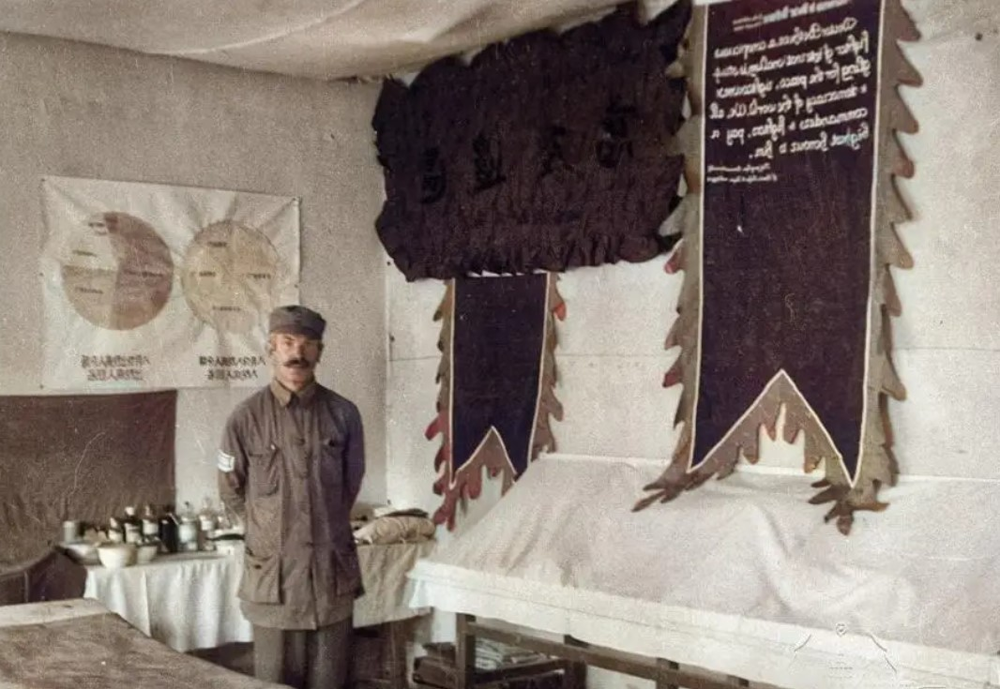

跨越国界的医者征途

抗日战争期间，中国战地医护人员在极其艰苦的条件下，冒着枪林弹雨救治伤员，为抗战胜利作出了巨大贡献。他们中有正规军医、红十字会人员、教会医院医生、民间救护队，甚至许多女学生和普通妇女也投身战地救护。 诺尔曼·白求恩，加拿大共产党员、著名胸外科医生，抗日战争期间不远万里来到中国，支援中国人民的抗战事业。他在极其艰苦的条件下创办战地医院、培训医护人员，最终因救治伤员感染牺牲，成为中加两国人民共同敬仰的英雄。 1938年1月，白求恩受加拿大共产党和美国共产党派遣，率领医疗队抵达武汉，本可在相对安全的大城市工作，但他坚持前往最危险的敌后抗日根据地——晋察冀边区（八路军抗战最前线）。毛泽东在延安接见他，白求恩说：“我来中国，不是来享受的，是要到前线去！” 当时八路军医疗条件极差，缺乏药品、器械，伤员死亡率很高。白求恩提出**“医生要去找伤员，而不是等伤员来找医生”，创立了“移动战地手术室”，使伤员能在24小时内得到救治。他设计“马背上的医院”，用驴驮着医疗器材，随部队转移，使手术室能快速抵达前线。 他在69小时内完成115例手术，曾连续工作40小时不休息。1939年4月，在齐会战斗中，他连续三天三夜手术，救治了120多名重伤员。为了争取时间，他常站在手术台旁吃饭，甚至让护士直接把食物塞进他嘴里。因缺乏正规医疗器械，他发明了“白求恩式肋骨剪”、“简易输液架”等工具。 用普通木匠锯代替骨科手术锯，用竹片代替夹板固定骨折 他还编写《游击战争中师野战医院的组织和技术》，成为八路军战地医疗的教科书。亲自授课，培养了大批八路军医务骨干，使根据地的医疗水平大幅提升。 1939年10月，白求恩在手术中割伤手指，感染败血症，高烧40℃仍坚持工作，直到昏迷前还在嘱咐：“一定要把药品送到前线……”1939年11月12日，在河北唐县黄石口村逝世，年仅49岁。 临终前，白求恩说道：“努力吧！向着伟大的路，开辟前面的事业！